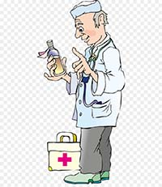

You've successfully completed all the healthstream modules for a week in order to start working at Stanford Hospital. There are three locations you'll be rotating which are Lane, 300P old building, and 500P new building. You'll be placed in the busiest place which is 500P and will following a lead for the rest of the day to familiarize surroundings. What will be your next action?
